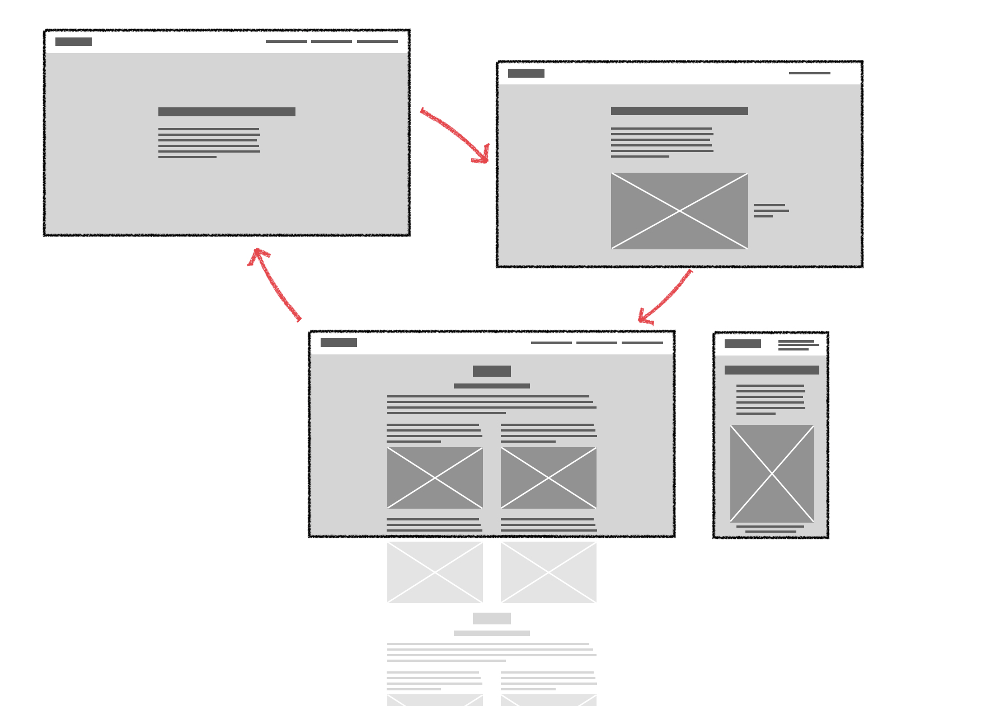

T2
T2Reflektion
Jeg har anvendt mine gamle opgaver til at dokumentere processen og beskrive tillærte færdigheder. Jeg har været udfordret på min fysik, og har undervurderet den tid jeg gerne ville have brugt på særligt layout. Jeg synes efterhånden er det er sjovt at kunne se processen i kodningen HTLM og CSS - jeg kan følge en proces, når jeg spiller computer. Det vil være rart at kunne lære mere om Javascript. Jeg erfarede sent i processen, at det er muligt at grid-definere udfra mobilstørrelse og når det er på plads udbygge til større skærme. Designprocessen ville jeg gerne bruge mere tid på for det er faktisk det jeg synes rigtig godt om. Den største udfordring er struktur; jeg har meget brug for en sparringspartner..
